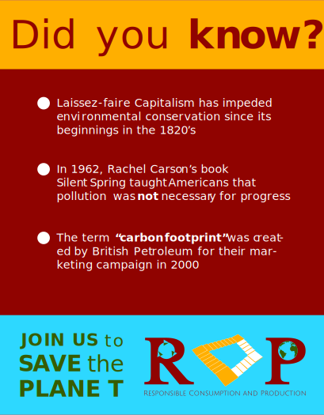

Click anywhere to close...
Design Brief

My next assignment was to create a design brief for my brand. Creating this made me think about how to represent the values of this fictional organization in a document.
Social Media Ads

In addition, I was also tasked with creating three social media ads. First; i made three concept ad designs (PDF 7.62MB), then I developed them further into finished social media ads after receiving feedback. Advertisements are supposed to push people to make a decision, so I used an emotional and ethical appeal to make people feel frustrated about companies, and push them to support our organization. I focused on breaking down the idea that individuals are responsible for environmental damage.